01
接触符号
设计目的
让符号进入玩家视野，但不给予解释。
玩家第一次接触这些符号时，不知道它们的含义，也不知道它们与后续谜题的关系。
流程目标
通过环境素材自然引入符号。
素材
入口地图
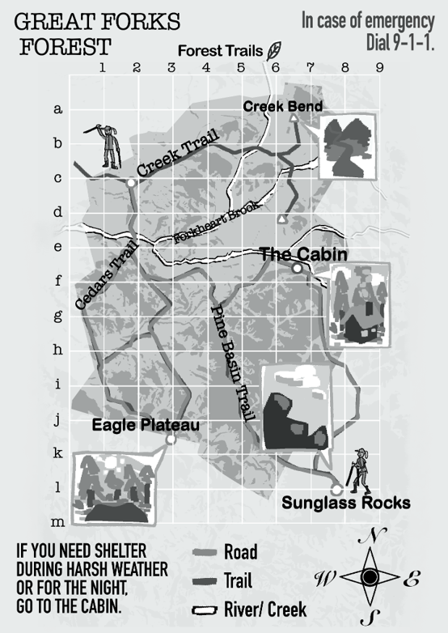
路牌
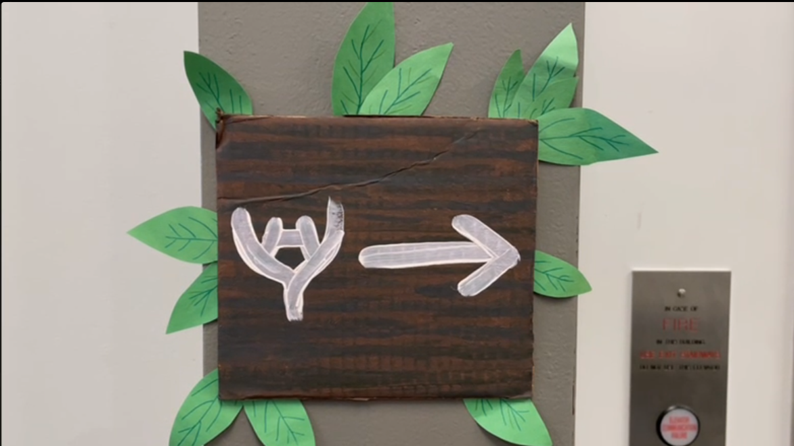
输出
玩家开始注意到这些符号可能具有某种意义。
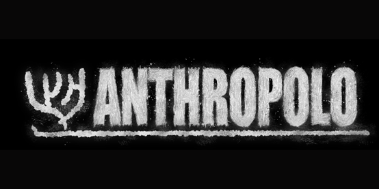
设计一套循序渐进的谜题流程，引导玩家从发现一种未知语言，到最终使用它完成交流。

玩家在野外登山时突然遇到大雨，只好进入一间神秘的小木屋避雨。
在小屋中，他们遇到了一名一直在研究人类文明的外星研究者。为了让雨停下来并离开小屋，玩家需要逐渐破解屋内的异文，并尝试与研究者进行交流。
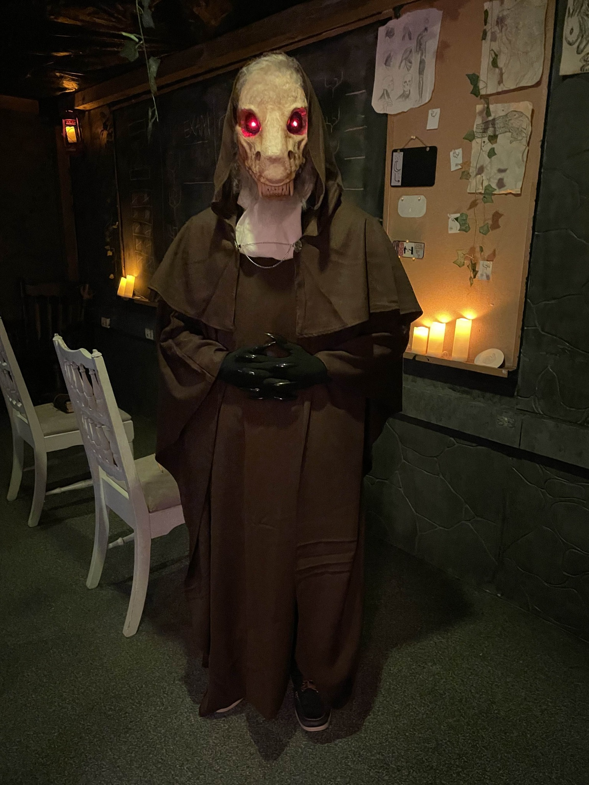
谜题设计
我负责设计：
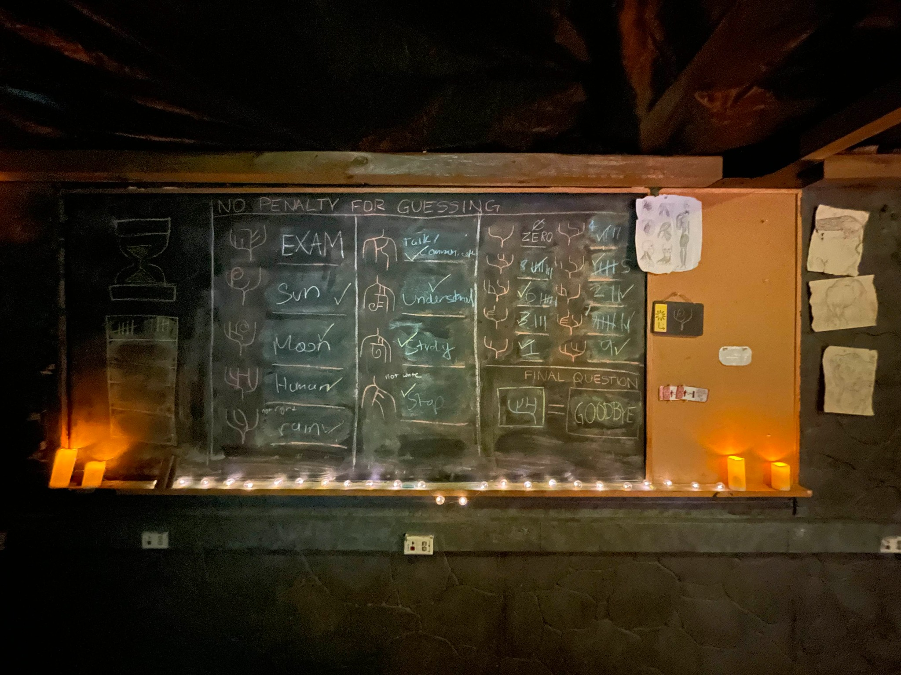
游戏不会直接告诉玩家这些符号是一种语言。玩家会通过环境线索和互动谜题，逐渐发现、理解并最终使用这套异文。
让符号进入玩家视野，但不给予解释。
玩家第一次接触这些符号时，不知道它们的含义，也不知道它们与后续谜题的关系。
通过环境素材自然引入符号。


玩家开始注意到这些符号可能具有某种意义。
让玩家发现符号不单单是装饰，而是需要翻译、解谜的语言。
涂鸦 + 黑板翻译题
玩家进入房间后，在最初5分钟的探索中，建立符号与意义之间的联系。
桌子上的若干涂鸦：图像+符号、人类文字翻译为外星符号。
黑板上的翻译谜题提供了明确的翻译示例，帮助玩家理解他们需要解什么谜。
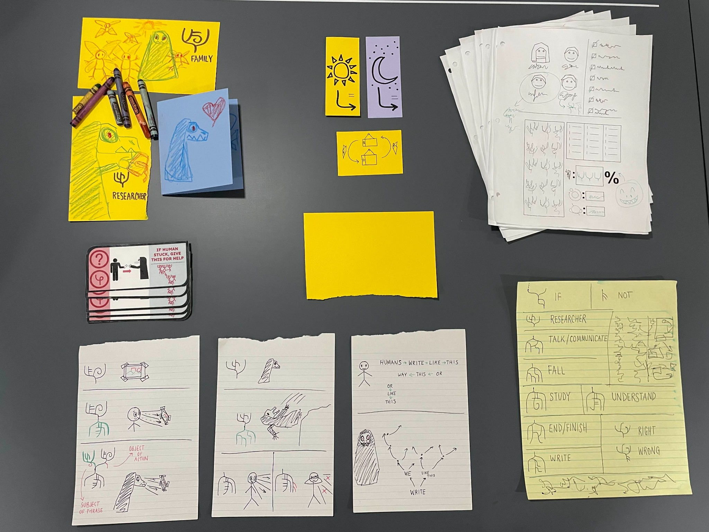
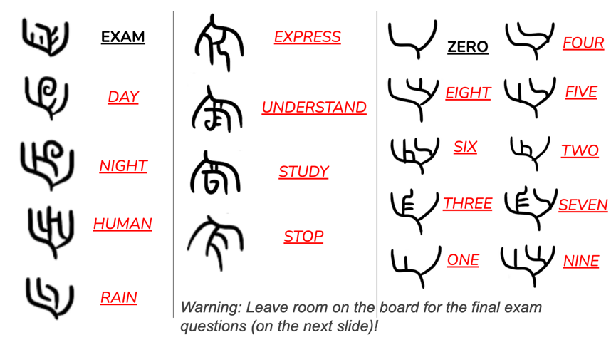
结合视觉线索（涂鸦）与文字示例（黑板翻译题），让玩家从“符号具有含义”进一步理解为“这些符号组成了一套语言”。
玩家确认：这些符号是一套语言，并开始寻找更多符号的对应含义。
让玩家获得第一次成功翻译的体验，并建立解题信心。
食物链谜题
玩家需要将动物板块按照正确的食物链关系排列。
例如：植物 ↓ 兔子 ↓ 狐狸 ↓ 鹰。
完成谜题后，顶部的太阳板块弹出。玩家通过简单算数谜题获得对应线索。
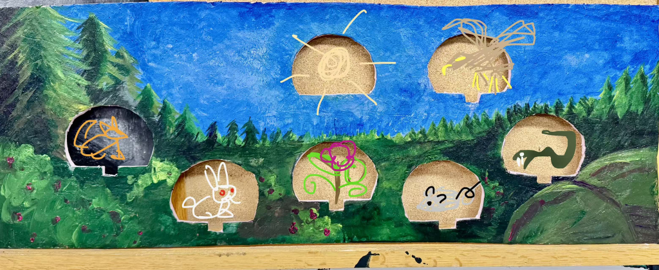
通过多个简单、明确反馈的谜题，让玩家确认：通过推理和解开更多谜题，可以破解更多符号。
玩家获得第一个确定词汇：太阳，并建立继续探索语言的信心。
让玩家通过不同来源的线索，逐渐扩充已知词汇，并建立符号与现实世界之间的对应关系。
地图谜题
玩家比较最初获得的旅行地图与房间内研究员留下的地图，通过两张地图中的地形、位置和标记进行对应，推断未知符号代表的地点。
例如：森林 = [异文符号]；小屋 = [异文符号]；飞船 = [异文符号]。
玩家利用已经获得的太阳符号，在昼夜控制板上进行尝试。
通过太阳和月亮这种具有普遍认知的视觉线索，玩家进一步理解自然现象对应的符号。
输入正确后：房间从夜晚变为白天；天气发生变化；玩家获得月亮符号。
帮助玩家持续扩充词汇表。同时，昼夜谜题让玩家第一次体验：使用语言符号可以改变游戏世界。
玩家获得更多基础词汇：森林、小屋、飞船、太阳、月亮……并开始主动运用已知符号。
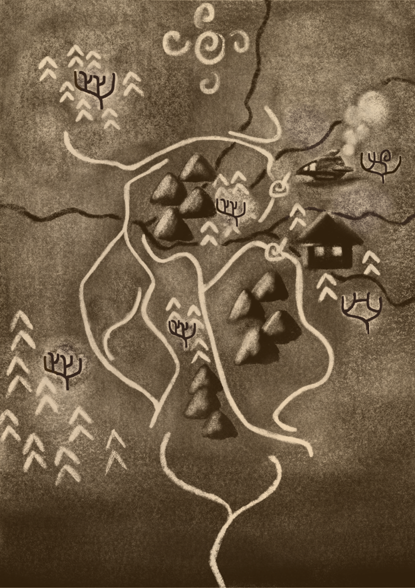
让玩家从理解单个符号，过渡到理解符号之间的组合关系。
玩家意识到：这些符号不仅代表单词，也可以按照一定规则组成句子。
看图说话谜题
玩家观察一系列具有叙事性的图片。每张图片旁边都有对应的异文句子。
玩家根据之前步骤中已获得的词汇、图片中的情境、提供的语法提示纸，推断符号之间的关系。
例如：图片表达“研究者飞船坠落森林。” 玩家结合：研究者 = 符号 A（来自阶段2）；坠落 = 符号 B（来自阶段2）；森林 = 符号 C（来自阶段4），破译逐渐理解语言结构。
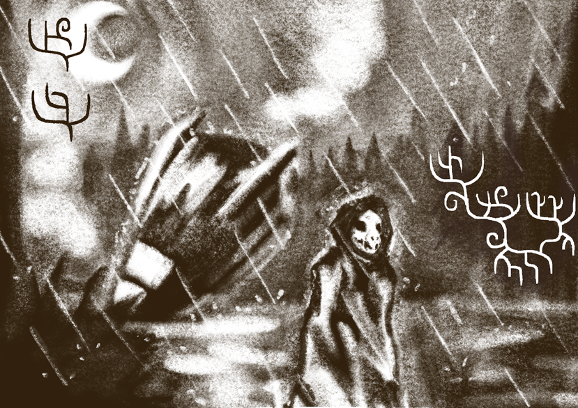
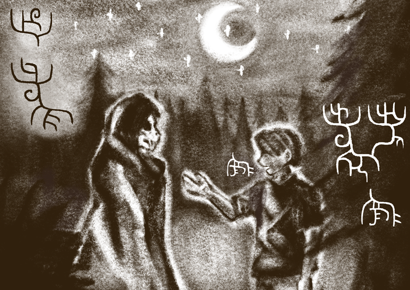
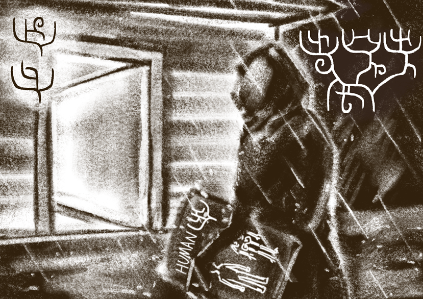
玩家发现：符号顺序会影响整体意义。
玩家破译新词，推进黑板谜题进度，掌握如否定，如果等简单从句用法。并能够解析更复杂的异文句子。
让玩家主动使用已经掌握的语言系统完成交流，获得最终反馈。
和外貌奇怪的研究者从最初的警惕到逐渐建立关系，到最后进行带有情感互动的使用对方的语言，“互相道别”。
玩家从“初步学习了这套语言”到“用这套语言和对方完成一次交流。”
最终谜题
玩家需要解开写在黑板上的最终异文句子：
如果考试正确，考试结束。
如果考试结束，写下“再见”。
如果写下“再见”，雨停。
经过前面的谜题，玩家已经掌握解题所需的单词含义、基础语法和句子结构。此时唯一未知的词是：“再见”。
玩家需要利用已有语言规则，推断他们要做的事情（找出对应的异文符号，并将其写在黑板上）。
玩家写出正确的“再见”异文符号，却并不知道这个词是什么意思。
研究者用英文写下 “goodbye”。
房间内雨声停止。
天气变晴。
房门打开。
玩家完成与研究者的最终交流，此时小屋解锁，能够离开小屋。
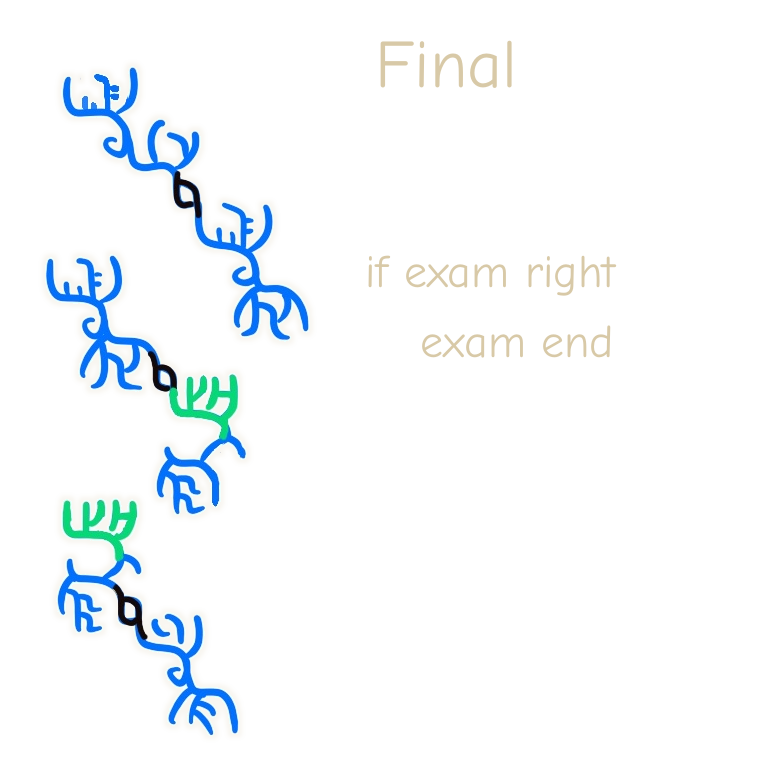
经过游戏测试，我们发现：
玩家能够理解单个词汇的含义，但从单词学习到语法理解的过程较为跳跃。
同时，玩家缺少足够的正反馈，导致他们无法确认自己的语言推理是否正确。
增加提示卡：
并增加更多涂鸦，帮助玩家提前认知语言结构。
主持人会批改玩家写在黑板上的符号。
最终谜题纸张和黑板最终谜题的答题区域使用相同颜色标记。
通过视觉关联，帮助玩家快速定位，建立起关联，意识到游戏的需求。